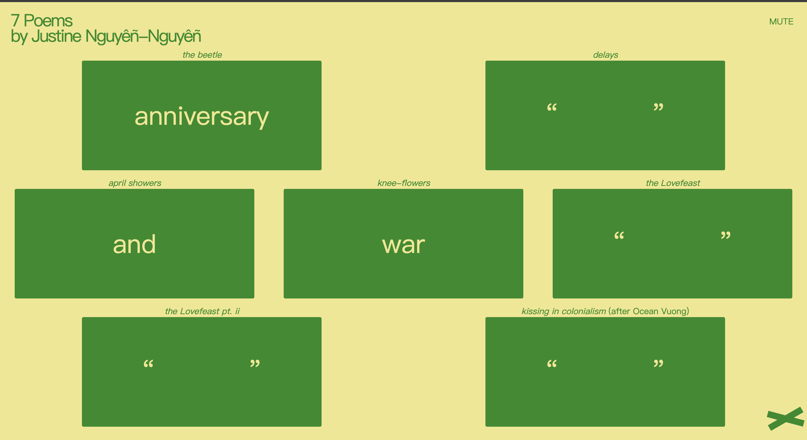
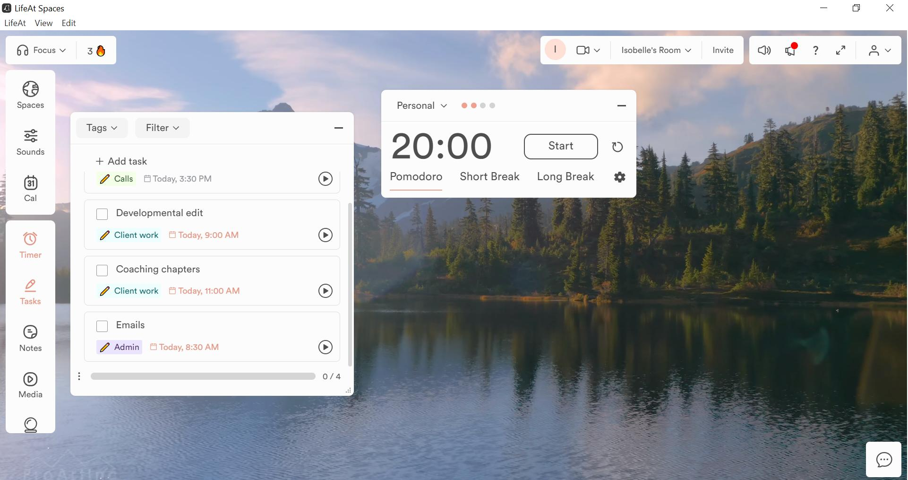

Scenario 4: Sonic Timer
Prompt
Design a way for users to relate to time using audio. This relation does not have to be quantitative measurement.
Context:
Clocks of various types are usually the instrument most strongly related to measuring regular intervals of time such as seconds, minutes and hours. Audio may instead be used to measure different intervals or otherwise change a user's experience of time, such as breaths in a period or meditation, or hold music while waiting on the phone.
Design Scenario Analysis:
After reading the brief, I understood this scenario as an opportunity to design a more meaningful relationship between users and time. I noticed that audio is a very important element, which means I should not just focus on time elements, such as clock or timer. As a result, my design will emphasize how audio can interact with time.
In everyday life, timers are often designed to be watched. During activities like studying or meditation, however, constantly checking the remaining time can interrupt concentration and create unnecessary pressure. This leads to the purpose of my design, where it allow users to maintain focus during study or meditation by experiencing time through sound.
Additionally, the value is to reduce time anxieties, frequent checking, and to build calmness for users. Rather than making time the focus, I want sound to become the primary way users understand the progress of a session. Gentle bell sounds and slowly changing ambient audio can guide users naturally from the beginning to the end without requiring them to frequently look at the screen.
Synopsis
I will design a website called Sonic Focus that helps users to focus during studying or meditation. Users feel the time through a constantly changing flow of natural background music and bells, instead of relying on watching the digital countdown on the browser.
Response to Purpose and Worth
Specifically, on the website, when a user wants to focus, they can select a time interval that they want to focus, e.g., 10 min / 30 mins, etc. Once they click the start button, there will be a start bell to notify users. After that, users don't have to look at the timer anymore. During the time, the ambient nature sound music will build calmness for users to enhance their focus. And when the time ends, the end bell sound will notice user again. Also, it's optional for users to enable the display of the countdown, and they can select the type of bell sound and music they like. This responds to the purpose and worth, as it supports users to feel time through hearing, instead of constantly watching it. It encourages a more relaxed and immersive experience, where sound becomes a gentle guide rather than simply a notification.
Framing
The design orientation of Sonic Focus isn't just a traditional countdown tool, but rather a time experience centered around sound. Therefore, I aim to build the entire design around three core feelings: "calm," "focus," and "immersive," rather than just efficiency or productivity. Instead of constantly reminding users of remaining time, Sonic Focus encourages users to naturally sense the passage of time, reducing anxiety caused by frequent checks on the countdown.In terms of design idea, I plan to use natural environmental sounds—such as wind, rain, and bird calls, gentle bell tones, and slowly evolving soundscapes as key design elements. These sounds not only represent the flow of time but also develop a more relaxed and natural atmosphere. Additionally, the visual design will remain minimal, retaining only essential control buttons and simple time displays, allowing sound to take a key role in the overall experience.
Furthermore, this project will be developed within a browser environment using HTML, CSS, and JavaScript to create the interface and interactive functions, also integrating the extended technique (Temporal JavaScript Object) to handle time-related functions. In detail, it will be used to manage the timing of each focus session. It can help to track the beginning, progress and end of a session, while audio such as bells and changing ambient sounds serve as the primary medium for interaction. Lastly, to maintain consistency with the design goals, this project will exclude social features, leaderboards, task management, or complex sound editing tools. I want users to focus on their current activity and auditory experience without being distracted by excessive features or information.
Interaction design analysis
Example 1: 7 Poems
The interface design of 7 Poems is very simple, with an overall style that resembles an interactive poetry book rather than a traditional website. The layout makes extensive use of space, simple typography, and engaging interactive elements. By combining audio and text elements, this allows users to focus on reading and experiencing the content through click-to-expand interactions, without being distracted by complex interfaces. This design creates a unique and immersive atmosphere, giving the entire product a strong sense of character.
After reading this case, it made me realize that the visual style of an interface can also influence users' perception of time. Therefore, I decided to adopt a more minimalistic visual design in Sonic Focus, reducing decorative elements and unnecessary features, so that attention remains focused on the sound experience and the user's current activity, rather than on a complicated visual interface.

Example 2: Ultimate Jungle Noise Generator
The Ultimate Jungle Noise Generator offers a wide variety of natural environmental sounds and allows users to instantly adjust the volume of different sounds via sliders. Each interaction produces immediate auditory feedback, enabling users to quickly understand the results of their actions. This instant feedback reduces the learning time and enhances the naturalness of interaction, making sound itself the primary mode of communication rather than relying on text instructions.
After reading this case, I understood that sound can also serve as a form of interactive feedback. Therefore, I want to use ambient sounds as the main medium for interaction in Sonic Focus, retaining only a few simple and intuitive controls. This can better establish a connection with time through real-time sound changes.

Example 3: Endel
Endel is a powerful music creation app that creates personalized sound environments to match user activities. It provides preset modes for relaxation, focus, sleep, moving, and reacts to time of day, weather, heart rate, and location to create unique compositions. By looking at Endel's interface, I think its goal is not to keep users actively interacting with the interface, but rather to help them enter states of focus or relaxation through automatically evolving soundscapes. The system continuously plays shifting sounds tailored to different contexts; users simply need to start playback and, for most of the time, require no further interaction. This approach places emphasis on the experience itself, rather than on interface control.
This case has led me to think about the design purpose of Sonic Focus. I want users to be able to refocus their attention on learning or meditation once they've started a timer, without having to constantly interact with the system. Therefore, I plan to minimize frequent interactions during use, allowing sound to naturally guide the entire time experience, keeping the interface simple and non-intrusive for users to better concentrate.


Example 4: LifeAt
The website LifeAt integrates environmental context, workspace, and timing tools into a single interface, which visually emphasizes the overall environment rather than the timer itself. Although time information is present, it doesn't dominate the screen, allowing users to naturally enter a state of focus without constantly monitoring remaining time. The information layout on the page looks very simple, clear, and clean, which makes it easy for users to understand and use. Also, the natural scenery background effectively reduces psychological pressure associated with time.
This case made me realize that countdowns don't necessarily have to be the core element of an interface. Therefore, in Sonic Focus, I decided to reduce the visual prominence of the digital countdown, and retain only essential information on the webpage.
